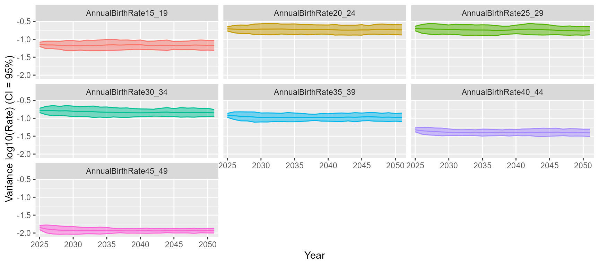

Built-in graphics
Charles Eliot
2023-02-03
graphics.RmdIn this note we describe the graphing functions built into the pacehrh package.
First things first …
… creating some data.
library(pacehrh)
pacehrh::InitializePopulation()
pacehrh::InitializeScenarios()
pacehrh::InitializeStochasticParameters()
pacehrh::InitializeSeasonality()
scenario <- "MergedModel"
pacehrh::SetGlobalStartEndYears(2025, 2050)
results <-
pacehrh::RunExperiments(scenarioName = scenario,
trials = 25)Fertility and mortality rates
The function PlotFertilityRatesStats() creates graphs of
the fertility and mortality rates used to generate population
predictions.
- type : {“ribbon” | “lines” | “boxplot”}
-
se : {TRUE | FALSE} - doesn’t apply to
type = "boxplot"- FALSE : confidence interval display based on standard deviation
- TRUE : confidence interval display based on standard error
-
log : {TRUE | FALSE}
- FALSE : linear y-axis
- TRUE : logarithmic (log10) y-axis
g <- pacehrh::PlotFertilityRatesStats(results, type = "boxplot", log = FALSE)
print(g)
g <- pacehrh::PlotFertilityRatesStats(results, type = "boxplot", log = TRUE)
print(g)
g <- pacehrh::PlotFertilityRatesStats(results, se = FALSE, type = "lines")
print(g)
g <- pacehrh::PlotFertilityRatesStats(results, se = TRUE, type = "lines")
print(g)
g <- pacehrh::PlotFertilityRatesStats(results, se = FALSE, type = "ribbon")
print(g)
g <- pacehrh::PlotFertilityRatesStats(results, se = TRUE, type = "ribbon")
print(g)